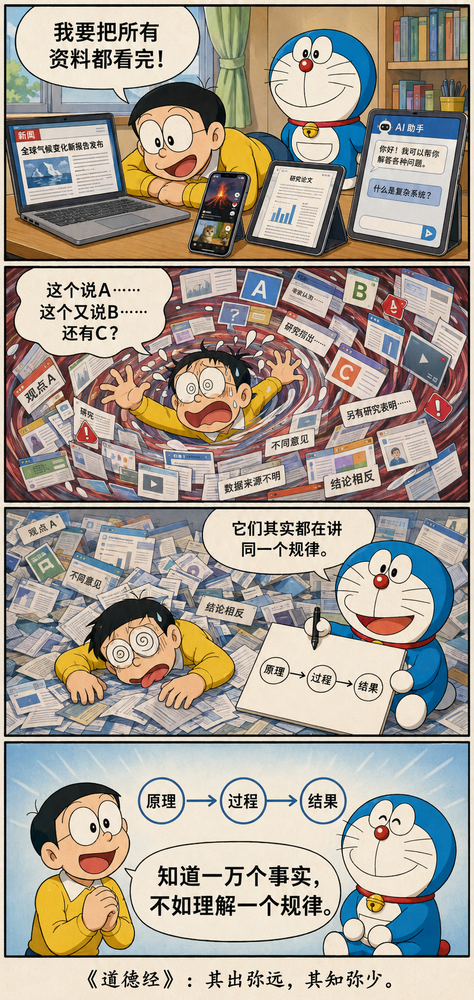

不必看尽每一棵树，才认识森林
不出户，知天下；
不窥牖，见天道。
其出弥远，其知弥少。
是以圣人不行而知，不见而明，不为而成。
走得越远，未必知道得越多
不走出门户，也能够认识天下；不从窗户向外窥望，也能够洞见天地运行的规律。走得越远、追逐得越多，反而可能知道得越少。
所以圣人不必亲自奔波就能知晓，不必事事亲见就能明白，不刻意强作，反而能够成就事情。
从看见现象，到看见规律


资料越来越多以后，会发生什么？
向右拖动，让新闻、论文、案例、访谈与观点不断涌进来。信息量会增加，但如果它们没有结构，判断未必跟着变清楚。
信息量40
理解度48
你已经收集了不少材料；它们仍然各说各话。
信息，不等于知识
今天的人拥有古人无法想象的信息：新闻、论文、微博、小红书、YouTube、ChatGPT。一天之内，我们可以接触几百甚至几千条内容。
但信息增加，注意力也可能被切碎；关系变得模糊，判断反而更难形成。看完一百篇论文、五十个案例与三十个访谈，你可能知道“别人说了什么”，却仍不知道这个问题为什么会这样。
知道一万个事实，不如理解一个规律。
把外部世界，变成内部模型
“不出户，知天下”并不是拒绝外界，而是说：学习的最终目的，是让经验在心中形成结构。
优秀的程序员看到一个新系统，不必读完所有代码。他会先看 architecture、data flow、abstraction、interface 与 dependency，很快判断系统可能在哪里出问题。
成熟的研究者也不必读完一个领域的所有论文。他开始看见：谁解决了什么问题，为什么这样解决，哪些假设脆弱，哪些难题始终没有解决。此时，他看到的不再只是一篇篇论文，而是论文背后的结构。
搜索，也会制造一种焦虑
“我还不知道，所以我要继续搜索。”Google、小红书、Reddit、YouTube、ChatGPT、论文，再回到搜索。每一次点击都像是在接近答案。
但资料越多，A 说这样，B 说那样，C 提供反例，D 又带来一个新理论。搜索没有自动带来确定，反而可能让人更混乱。
老子的提醒很简单：先停一下。不要立刻再找一条信息，先问自己——我用什么原则判断这些信息？
你必须先见过世界，才可能抽象世界
如果把这章理解成“聪明人不用调查、不用实践，坐在家里就能知道一切”，便把它读反了。
先接触现实，才能形成模型；形成模型以后，才不必每遇到一个新情况，都从头经历一次。这时，“不行而知”才有了根基。
很多新问题，只是换了一个表面
年轻研究者很容易不断向外扩张：做实验、找数据、改模型、再跑实验。经验渐深后，另一种能力才会出现：看到一个问题，就知道它大概属于哪一种结构。
面对一个新的 visualization problem，你会自然追问：数据是什么？encoding 是什么？interaction 是什么？representation 在哪里？用户的认知瓶颈是什么？AI 解决的是生成、理解，还是探索？
科研经验真正的价值，不是“我做过很多项目”，而是“我逐渐知道哪些东西其实是同一个问题”。
不再用力推动，而去创造条件
“不为”不是不做事情，而是不以蛮力强行推动。低层次的办法是不断介入、控制每一步；更高明的办法，是把结构搭好，让事情自己运行。
不是停止行动，而是从“推动结果”，转向“创造结果发生的条件”。
从多少，走向多深
知道发生了什么。
知道它们如何关联。
即使没有新信息，也能继续推演。